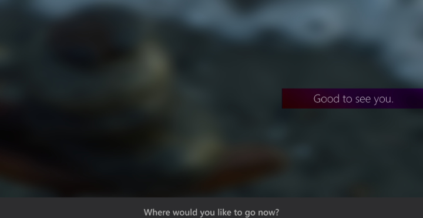
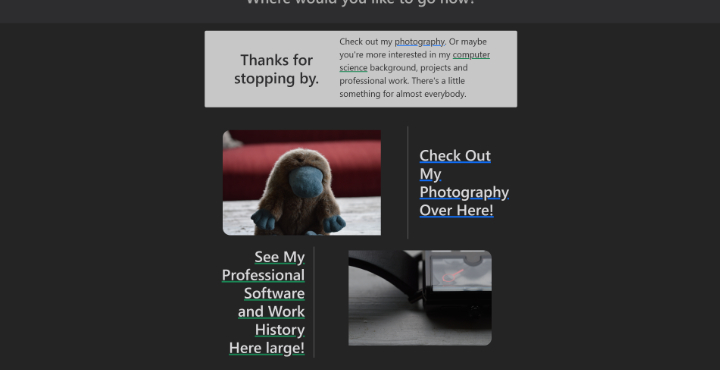

The Portfolio Website
I had a few ideas for what exactly this portfolio website should convey.

Corey Crooks Work

Work History
My Photography

My Design Philosophies

Although this wasn't a typical internship working for an external company, Purdue Global gave me valuable skillsets that I was able to deploy working on projects and learning industry standard tools such as Git and GitHub. I utilized these tools, and deepened my skillsets to create the very website you're viewing now. I am proud to show my achievements in development and responsive design with this showcase of my potential!
Web Design
Collaboration
Programming
References available upon request. Check out their site here.
I used an app on my phone to search for e-bikes within a live-service market, deploy maintained vehicles, and perform maintenance and troubleshooting depending on what that vehicle needs. I employed Veo-trained skills as well as my own technological background to solve problems and propose strategic heuristics to improve the overall operational efficiencies.
Live Service
Beta Testing
Technical Support
References available upon request. Check out their site here.
I worked as a receptionist for Bishops Cuts and Color in Capitol hill. I oversaw the shop in a managerial function by on-boarding new receptionists, processing monetary transactions, testing new point-of-sales systems for vulnerabilities and improved workflows, and ensured a productive space.
Management
Cash Flow
Agile Operations
References available upon request. Check out their site here.
I had a few ideas for what exactly this portfolio website should convey.
In the past, I had worked with HTML and CSS way back in middle school to learn the languages. The idea of creating an interface that could be accessed virtually anywhere was (and still is) absolutely fascinating to me. Back then, it was all about creating something to just simply learn.

Although that goal hasn't changed, it's gotten a bit more complex. Today, I am in pursuit of a career in computer science and software programming. Through my studies at Purdue University Global, I have had the opportunity to enhance my already present skills to evolve my website development
into something with a true purpose.
Creating a professional website using pure HTML and CSS is a fantastic way to build a solid foundation in web development. By mastering these core technologies, you gain full control over your website's structure and design that allows for clean, efficient code that's easy to maintain and
optimize. It also ensures that your site is lightweight and fast, providing an excellent user experience across devices.
The beauty of HTML and CSS lies in their simplicity, yet they offer endless creative possibilities for crafting stunning and responsive layouts. As you dive deeper into the nuances of positioning, grids, and media queries, you'll discover how powerful these tools are for developing a visually
appealing and intuitive user interface (UI). A well-designed UI isn't just about looks—it's about enhancing user interaction, guiding visitors seamlessly through the site.

This very website went through several iterations throughout its development, as is common with any piece of software. Initially, it was quite simple, focusing on two main pages with very little in between. The home page had just two buttons—one leading to a work history page, the other to a
photography section. Over time, I added more content to align the site with the exposition-style UI that I had envisioned for a portfolio piece. I refined the layout, ensuring that each section had a clear purpose and flowed naturally. Now, I am quite satisfied with the overall design and structure.
Throughout this process, I learned a great deal about HTML and CSS, particularly in terms of best practices and practical use cases. The development experience has been invaluable, enhancing both my technical skills and my understanding of web design. Moving forward, I am excited about the
opportunity to keep building on this foundation, to refine my skillset further, and to continue evolving my career in web development.